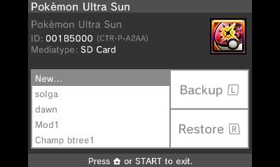
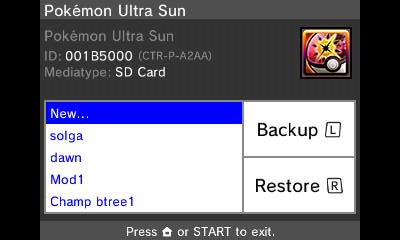
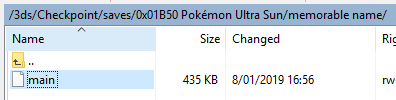
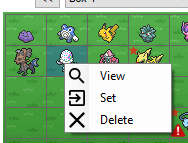
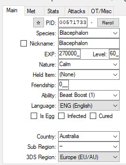
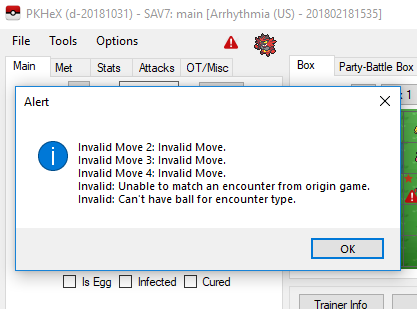
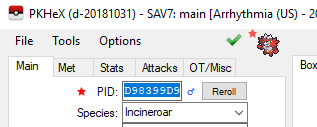
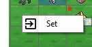
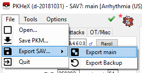
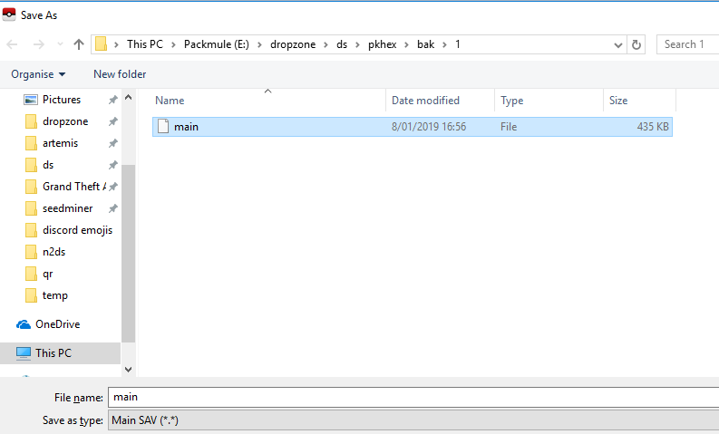

PKHeX
Here are some (basic) instructions on using PKHeX to hack your Pokémon games. PKHeX handles most main series games, notably including Let's Go!
PKHeX can do much more than what this simple tutorial shows, and if you want guidance on other nifty things it can do like item editing, game flag edits, event flag edits and other rad things, ask the Internet or the Nintendo Homebrew. Ask in the #hacking-general channel.
If you'd rather not bother generating your own mons, there is an event database here which contains pre-packed mon files that PKHeX can load and write into your save. just load the mon into PKHeX then set it into an empty space (read onwards if you don't know what that means)
- First of all, you'll need a Pokémon game with a save. It doesn't matter if you've only played up to the point where you set the clock, or if you've beaten the Champion. You can't generate a save to edit, you need to pull one you already have.
- Second, you (likely) need a hacked console, and a save data manager. For this, I'll be using Checkpoint which is recommended for the 3DS and the Switch.
- Here is a listing of Checkpoint's controls (on the 3DS), for your reference.

- On the top screen, you will see a list of your games. Scroll to select the game you intend to modify. You will see it show up on the bottom screen, like so:

Note: I have some backed up saves here. They obviously will NOT appear on your version.
- Select the game by pressing A. It will show up blue:

- Press the left shoulder button, or tap the "Backup" button on the screen, with "New" selected, then press A at the following screen:

This will copy the save file from the game to your SD card, decrypted so that you can use it.
- Give it a memorable name:

- Now, put your SD card into your computer (or activate a wireless file transfer solution).
- Find your save on your SD card. Here is an example directory structure. Yours will probably be very similar.

- Inside that folder is your save, in this case called "main". Note specifically that it is 435KB and does not have a file extension. Copy "main" to somewhere on your computer.

- Make another copy of "main" so that you have one you are going to edit, and one that is going to remain clean. If you edit the save again, keep one copy of the last known working save, and edit another separate copy. PKHeX also keeps backups of saves upon import, if you are lazy like me.
- Open PKHeX, click File in the top left then Open, and navigate to your save. The directory structure is an example only. Yours will be different.

- Right click on a Pokémon that you legitimately caught in the game, and click View.

- The details on the left, and the sprite up top, will change to match the Pokémon you selected. From the tabs on the left, select OT/Misc:

- These details will allow you to make Pokémon in the game that will obey you, because you are their original trainer. You can also edit details of traded mons to make you their OT. Take note of them.
- SKIP THIS IF YOU ARE GENERATING YOUR OWN POKéMON.
If you are importing a wondercard, event file or other mon file, now is the time to go to File > Open then select your mon file. Bringing it in will fill its details in the tab on the left. You can change them if you want, but it's usually better not to. Right click an empty space on the right and click Set to set the mon to that empty position, then skip to step 22. - From the tabs on the left, select Main. Here you can change various things, as seen here:

- The EXP and level will adjust each other accordingly if one is changed. Leave Nickname unticked if you do not wish to use one. The star up top makes a mon shiny, but this should ALWAYS be done last, otherwise there is a very high chance it won't work. The country, sub region and 3DS region should always match the details of the cartridge or game the save came from (except in the case of trades).
- This nifty little thing is the legality check.

The little red warning symbol appears after making a change if the Pokémon is no longer legal after the change you made. Click it to find out why. In this example, it tells you that moves 2, 3 and 4 are not valid for the picked mon, that the mon does not have valid encounter details, and that the ball and encounter type are incompatible. This Incineroar, according to the data, was met in the Ultra Space Wilds and caught in a Beast Ball, so it makes sense that it's not classified as legal.
- Head over to the Attacks tab to find out what's happening. More little red warning symbols tell you that moves 2, 3 and 4 are invalid. Click inside the current moves box, but not on any field (ie somewhere in the white space) to prompt PKHeX to suggest some default moves based on current level, and apply them to fix this particular issue.

- Other things like the origin game, met location, ball type and encounter type ("Met" tab) will vary depending on what you are trying to do. It can also vary depending on trades. Pretending the Pokémon has been traded to you, or traded upwards from older games, can sometimes help circumvent legality issues. It can be difficult to work out the kinks sometimes, but usually not terribly hard. Once you've made it legal, the legality check will show a green tick, and clicking it will do this:

- If you want to make it shiny, and you've done everything else, go back to the Main tab and click the star.

This will change the PID, and may also make the Pokémon illegal. Working out shiny kinks is a huge pain in the ass sometimes. Consult the internet for more guidance.
- THIS PART IS IMPORTANT. Once you have made all your changes to your Pokémon, YOU MUST SET IT TO A POSITION. Right click an empty spot and Set it.

Until you do that, your mon is just numbers. If you are editing an existing mon, Set your edited mon over the original mon. Make sure the OT details are yours (if you want them to 'belong' to you).
- Once you have performed your desired edits, Export your save:

- PKHeX will automatically select the directory you brought it in from. Saving it there is probably a good idea, unless you want to change it for some reason.

- Once you have exported it, copy it back to your SD card to the same directory it came from in the first place. Here is my example directory, if that helps you remember. Overwrite the existing save with the edited save.
- Put your SD card back in your console.
- Load Checkpoint, select your game, select the memorable name you chose earlier, and select Restore:

This will inject your save file back into the game, encrypted so the game can use it.
- Once this succeeds, close Checkpoint, open your game, load your save and check your modifications succeeded.